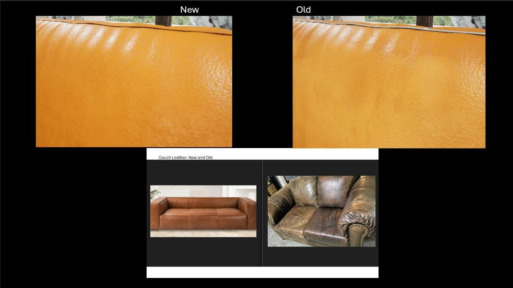
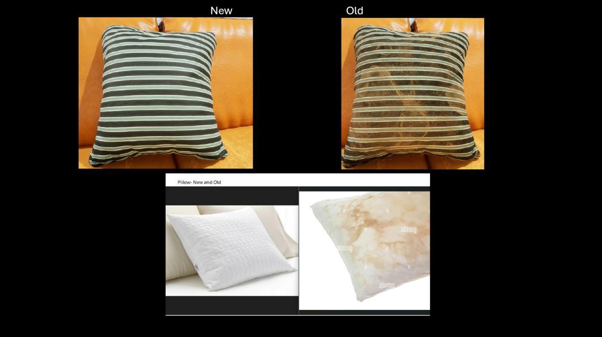
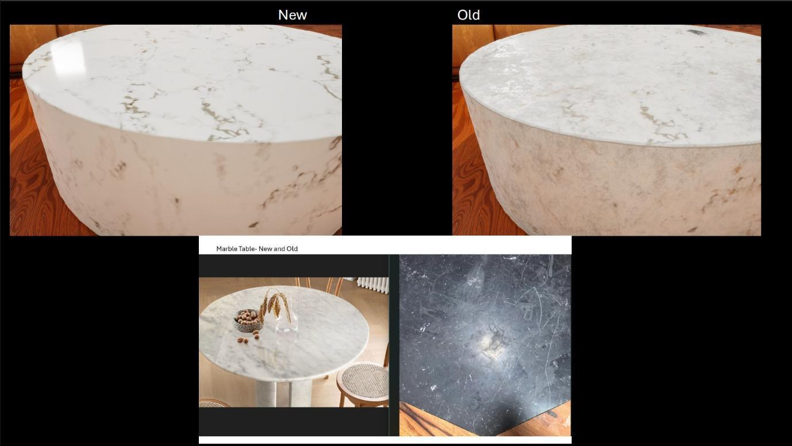
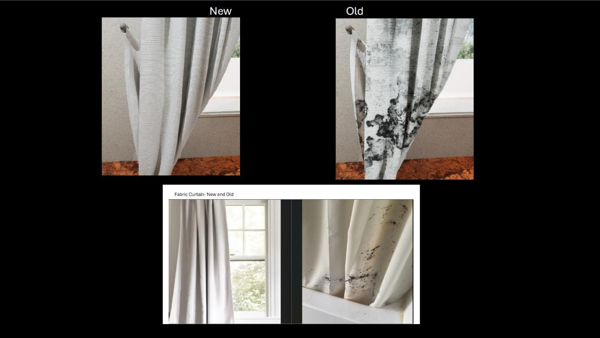
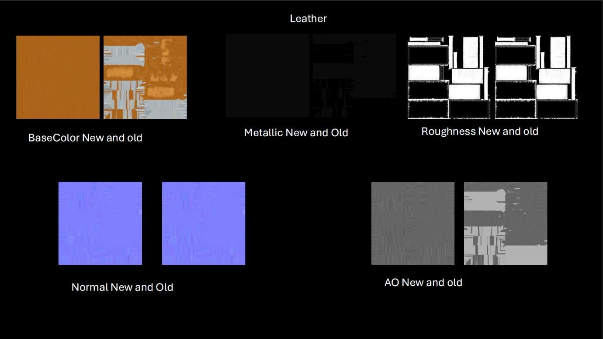

Manufactured Materials
Six manufactured materials, each built new-and-worn — a full authoring pipeline from procedural base to final render.

Every material started as a procedural base in Substance Designer — roughness, normal detail, and albedo built from node graphs, not photos. From there each one split into two variations in Substance Painter: a new pass and a used pass, hand-painted with wear, scratches, dust, and surface degradation. Meshes got manually-built UVs in Maya to keep texel density even, so nothing stretched or tiled once the materials landed at full resolution in Unreal Engine.




Reading the layers: below is one material's Substance Painter stack broken apart — base coat, then the individual wear/dust/scratch layers that get masked in on top to build the "used" variation.
